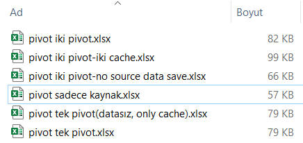
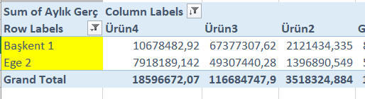
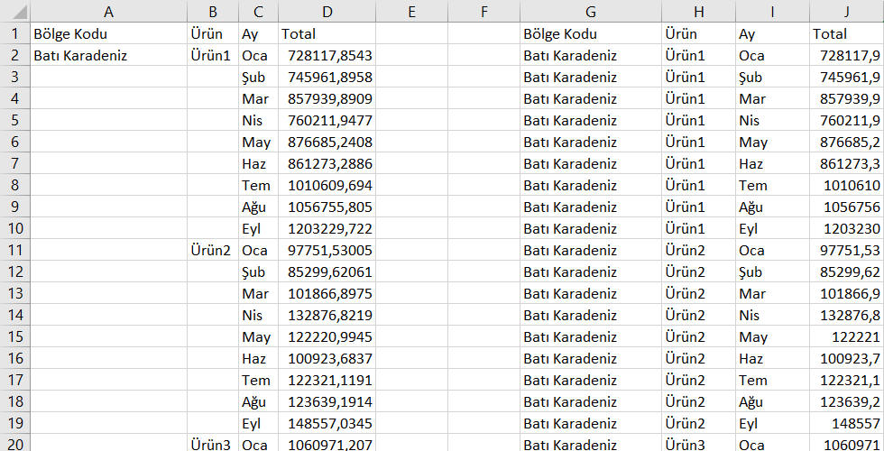
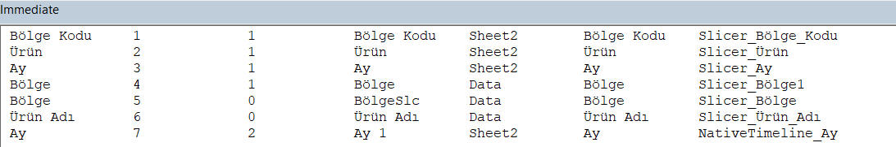
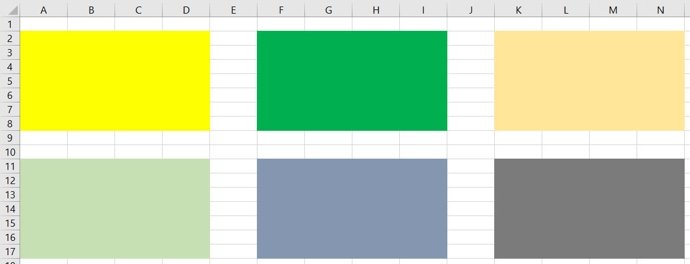
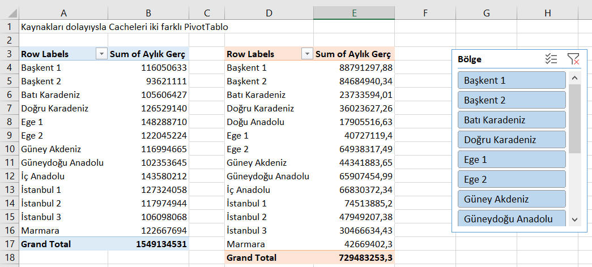
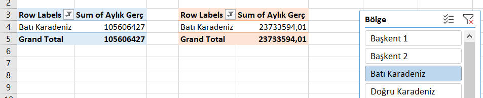
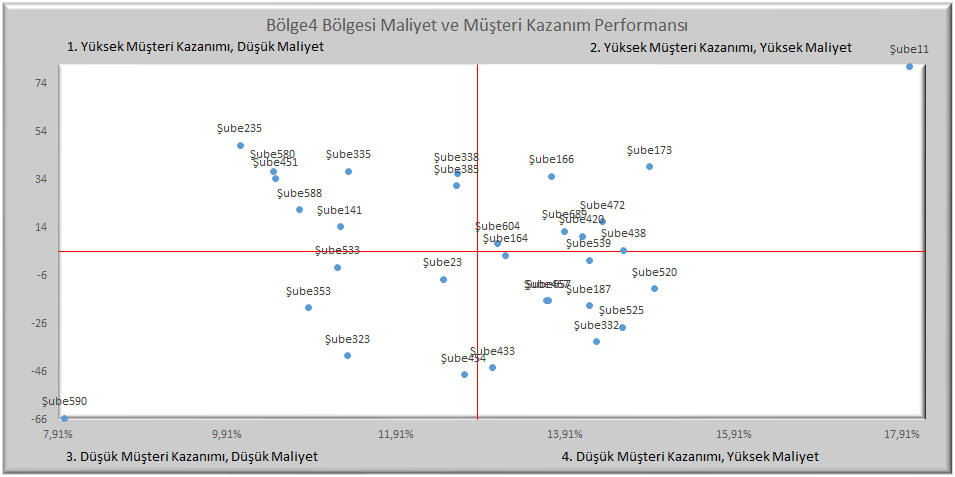
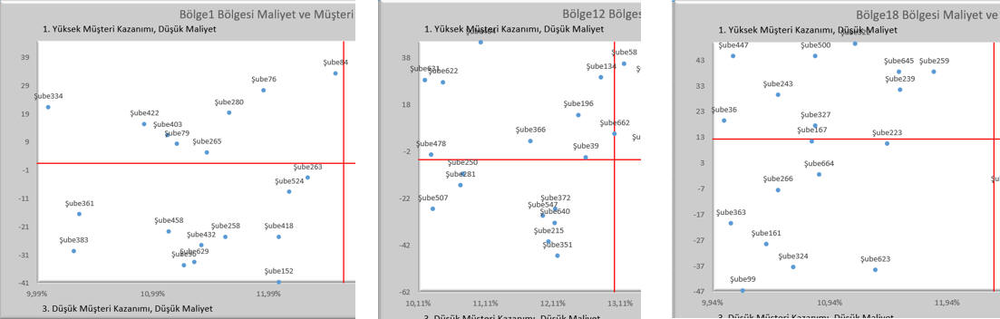

|
VBAMakro |
İleri seviye konular |
4 |
PivotTable, Slicer ve Chart nesneleriyle çalışmak
Pivot Tablolar
Giriş
Pivot(Özet) tablolarla çalışmaya başlamadan önce Excel tarafında konuya
hakim olmak önemlidir. Buraya kadar geldiğinize göre konuyu bildiğinizi
varsayıyorum ancak bilgilerinizi tazlemek isterseniz sizi
şöyle alayım.
Baştan belirtmekte fayda var;
Pivot tablo(bundan sonra PT diye anılacak) konusu VBA tarafında biraz alengirli bir hal alır,
zira Excel önyüzde görmediğimiz bir nesneyle çalışmamız gerekmektedir.
Bunun adı PivotCachedir. Onun dışında aslında recorder ile üreteceğiniz
birkaç kodu elden geçirmekle kolaylıkla öğrenebileceğiniz bir konudur. O
yüzden ben bu sayfada gereksiz yere recorderla elde edebileceğiniz
detayları koymamaya karar verdim. Onun yerine refresh işlemleri, birkaç
önemli işlem, birkaç
event ve sonrasında da slicerlarla olan ilişkisini anlatmak istiyorum.
Tabiki otomasyon projelerinizde data üretimi sonrasında kodun bir PT
da üretmesi gerekiyorsa PT yaratmayı bilmeniz lazım ama dediğim gibi
bunu recorderla çok rahat görebilirsiniz, gereksiz fazlalıkları
atmak size kalıyor.
Size tavsiyem öncelikle birkaç işlemi(pivot oluşturma, filtre koyma,
filtre kaldırma, repeat all items yapma v.s) recorder ile yapın ve
kodu inceleyin.
Yine de "ben recorderla uğraşamam diyorsanız MSDN'den detay bilgi
edinebilirsiniz. İngilizceniz yoksa ve pivot detaylarını yine de yazmamı
isterseniz bu sayfanın altına yorum bırakın, uygun bir zamanda bunları
da eklerim, ama dediğim gibi gerçekten burada anlatacaklarım dışında
nerdeyse herşeyi recorderla kolaylıkla elde edebilirsiniz ve bunlarla
ilgili olarak dikkat çekecek bir husus bulunmamaktadır.
Veri Seti
Üzerinde çalışacağımız data seti, Excel konularındaki örnek
data setidir, buradan indirebilirsiniz.
Mesela aşağıda, bu dosyanın
"calculatedlar" sayfasındaki
dataya uyguladığımız PT'ın
recorderla elde edilmiş kodu bulunuyor.
Tabi bu kodu şuan çalıştırsanız sizde çalışmaz zira sayfa isimleri
değişmiş olacak. Onun yerine kendiniz yeni bir recorder çalıştırıp
görün derim.
Sub Macro1()
'
' Macro1 Macro
'
'
Sheets.Add
ActiveWorkbook.PivotCaches.Create(SourceType:=xlDatabase, SourceData:= _
"calculatedlar!R1C1:R175C6", Version:=6).CreatePivotTable TableDestination _
:="Sheet1!R3C1", TableName:="PivotTable1", DefaultVersion:=6
Sheets("Sheet1").Select
Cells(3, 1).Select
With ActiveSheet.PivotTables("PivotTable1")
.ColumnGrand = True
.HasAutoFormat = True
.DisplayErrorString = False
.DisplayNullString = True
.EnableDrilldown = True
.ErrorString = ""
.MergeLabels = False
.NullString = ""
.PageFieldOrder = 2
.PageFieldWrapCount = 0
.PreserveFormatting = True
.RowGrand = True
.SaveData = True
.PrintTitles = False
.RepeatItemsOnEachPrintedPage = True
.TotalsAnnotation = False
.CompactRowIndent = 1
.InGridDropZones = False
.DisplayFieldCaptions = True
.DisplayMemberPropertyTooltips = False
.DisplayContextTooltips = True
.ShowDrillIndicators = True
.PrintDrillIndicators = False
.AllowMultipleFilters = False
.SortUsingCustomLists = True
.FieldListSortAscending = False
.ShowValuesRow = False
.CalculatedMembersInFilters = False
.RowAxisLayout xlCompactRow
End With
With ActiveSheet.PivotTables("PivotTable1").PivotCache
.RefreshOnFileOpen = False
.MissingItemsLimit = xlMissingItemsDefault
End With
ActiveSheet.PivotTables("PivotTable1").RepeatAllLabels xlRepeatLabels
With ActiveSheet.PivotTables("PivotTable1").PivotFields("KANAL")
.Orientation = xlRowField
.Position = 1
End With
With ActiveSheet.PivotTables("PivotTable1").PivotFields("URUN")
.Orientation = xlColumnField
.Position = 1
End With
ActiveSheet.PivotTables("PivotTable1").AddDataField ActiveSheet.PivotTables( _
"PivotTable1").PivotFields("TUTAR"), "Sum of TUTAR", xlSum
End Sub
Yukarıda da bahsettiğim
gibi recorder kodunda gereksiz birsürü kısım var, zira artık bildiğiniz
üzere recorder bir nesneye ait tüm propertylere değer atıyor.
PivotCache nesnesi
Yukarıdaki koddan
göreceğiniz üzere bir pivot table yaratılmadan önce PivotCache(Bundan
sorna PC olarak anılacak)
nesnesi yaratılıyor.
PC, veri kaynağının bellekte özetlenmiş halidir.
Her PT'ın arka planda dayandığı bir PC vardır. Neden
böyle bir şeye ihtiyaç var diye sorabilirsiniz. PT'lar bence ve birçok
kişi tarafından Excel'in en güçlü aracı olarak kabul edilir. Bunların gücü, birçok gruplama
işini çok hızlı yapmasında yatıyor. İşte bu hız, bellekteki PC
tarafından sağlanır, aksi halde her defasında veri kaynağına gitmek
gerekecekti ki bu da hızın düşüşü anlamına gelecekti. İşte bu yüzden
öncelikle PC yaratılır.
Excel 2007'den
önce bir veri kaynağından üretilen her PT'ın ayrı bir PC'si olurdu, bu da bellek tüketimi için çok iyi olmazdı ve dosya
boyutunu da gereksiz yere şişirirdi. Excel 2007 ile birlikte aynı
kaynaktan üretilen PT'ların PC'si ortaklaştırıldı. Bununla
beraber bazı durumlarda bunların PC'sini ayrıştrımak gerekebilir,
bunu nasıl yapacağımızı aşağıda göreceğiz.
Rakamlarla örnek vermek gerekirse; 2007
öncesinde kaynak datanız 1 MB büyüklüğündeyse ve 3 PT yarattıysanız
dosya boyutu 3 MB daha artıyordu. 2007 ve sonrasında sadece 1 MB
artıyor. Bu 1 MB'dan da tasarruf etmek için "save source data"
yapabilrsiniz.
Aşağıda benin üzerinde çalıştığım birkaç dosyanın boyutunu
görebilirsiniz(Edit:Dosya adlarındaki baştaki "pivot"u görmezden
gelin):

Daha detaylı analiz ettiğimizde;
- Boş bir dosya 9 KB
- Sadece kaynak datayı içerdiğinde 57 KB. Demekki datanın
getirdiği net yük: 57-9=48 KB
- Bu dosyada tek bir PT yaratınca boyut 79'a çıkıyor.
Demekki, cache + pivot sayfasındaki özet data=79-48=31 KB(Gerçi
özet alanında hiç veri koymasam da boyut yine 79, demek özet
veri ihmal edilebilir düzeyde)
- PT sayısını 2ye çıkarınca boyut 3 KB daha artıp 82
oluyor. İki PT da aynı cacheyi kullandığına göre, bu 3
KB'lık artış sadece ikinci PT'ın özet verisinden geliyor
- İki pivotun cachesini birbirinden ayırırsak boyut 99'a çıkıyor.
Demekki ikinci cache katkısı 99-82=17 KB
- Cacheleri tekrar ortaklaştırıp ancak kaynak datayı dosya ile
birlikte kaydetmezsem boyut 66 KB'a düşüyor.
Cacheyi tek mi tutmalı çok mu?
Paylaşımlı
PC'ler tabiki hafıza kullanımı açısından ve çoklu
PT'ların aynı davranışı göstermesi gereken durumlarda
sunduğu verimlilik açısından faydalıdır. Ancak bunun arzu edilmediği
durumlar olacaktır:
- Mesela bir PT refreshlendiğinde diğerleri refreshlenmesin
istiyorsunuzdur
- Bir alan üzerinde gruplama yaptıysanız, bu gruplama tüm
PT'larda uygulanacaktır. Halbuki siz bunun sadece birinde
olmasını istiyorsunzudur.
- Keza, bir PT'a calculated item/field koyduğuzuzda
tümünde görünecektir. Bunu istemiyorsunuzdur.
İşte bu sebeplerden dolayı cacheleri ayırmayı bilmek önemlidir. Bunu
az sonra göreceğiz. Önce PT ve PC'lere biraz daha yakından bakalım.
PC ve PT'larla çalışmak
PC'ler
Workbook nesnesinin bir collection'ı iken, PT'lar Worksheet'indir.
Yani, toplam PC sayısını Activeworkbook.PivotCaches.Count diye
alabilirken toplam PT sayısını bu şekilde alamayız, her bir sayfada dolaşıp toplam aldırmamız gerekiyor.
Sub pivot_adetler1()
T = 0
Debug.Print "Toplam pivot cache sayısı:" & ActiveWorkbook.PivotCaches.Count
For Each ws In ActiveWorkbook.Worksheets
T = T + ws.PivotTables.Count
Next ws
Debug.Print "toplam pivottable sayısı:" & T
End Sub
Tabi istersek belli kriterleri sağlayan PT adedini de
saydırabiliriz. Mesela adında "Piv" ifadesi geçenleri saydıralım.
Sub pivot_adetler2()
T = 0
For Each ws In ActiveWorkbook.Worksheets
For Each pt In ws.PivotTables
If InStr(1, pt.Name, "Piv") > 0 Then
T = T + 1
End If
Next pt
Next ws
Debug.Print "toplam pivottable sayısı:" & T
End Sub
PC'ler otomatik üretilen nesneler olduğu için bunlarda isim(name
propertysi)
olmaz, sadece indeks olur. Ancak PT'ların ismi olabilir.
PT'lara doğrudan isim veya indeksiyle ulaşılabileceği gibi pivotun
içindeki bir hücreyi referans gösterip onun PivotTable propertysi ile
de ulaşabilirsiniz.
Tüm PT'lara hangi PC'den beslendikleri ve hangi sayfada
olduklarıyla beraber ulaşmak için şu kodu yazabiliriz.
Sub pivot_ve_cacheleri_gör()
For Each ws In ActiveWorkbook.Worksheets
For Each pt In ws.PivotTables
Debug.Print pt.Name, pt.CacheIndex, pt.Parent.Name
Next pt
Next ws
End Sub
Tabi böyle bir kodu çalıştırmanın bir
epsirisi yok. Bu haliyle olsa olsa test/kontrol yapmakta kullanılır. Onun yerine
ihtiyacınıza göre modifiye edip öyle çalıştırırsınız. Ör: Adında "Mevduat" geçen PT'ları refreshlemek gibi.
Bazen de özellikle test/kontrol amacıyla üzerinde çalıştığınız
pivottableların indekslerini öğrenmek istersiniz. Malesef
Pivottablelar için bir Index/Id gibi property yok, o yüzden
aşağıdaki çözümle ilerleyebiliriz.
Sub pivotlarınİndeksleriniGör()
Dim ws As Worksheet
Set ws = ActiveSheet
For i = 1 To ws.PivotTables.Count
Debug.Print i, ws.PivotTables(i).Name
Next i
End Sub
NOT: Bu çözüm sadece bir oturuma ait bir çözüm olabilir. Zira dosyayı
sonraki açışlarınızda bu indekslerin değiştiğini görebilirsiniz. O
yüzden PT'lara indeks numaralarıyla ulaşmak yerine isimleriyle ulaşmak
daha güvenlidir.
Refreshleme
Şunu akılda bulundurmak lazım ki, hem
PC'ler hem
PT'lar refreshlenbilir ama PC'leri refreshlemek her zaman daha
hızlıdır, zira bunlar kaynağa doğrudan bağlıyken PT'lar PC'ler üzerinden ikinci seviyeden bağlıdır.
Üstelik bir PC'ye bağlı 3 PT
varsa döngüsel olarak tümünü refreshlemek anlamsızdır, zira biri
refreshlenince zaten hepsi reflesnir, ancak döngü içinde dönerken mecburen
hepsi de refreshlenmek durumunda kalır, ki bu da kodun gereksiz uzun çalışmasına neden olur.
Refresh yöntemleri aşağıdaki gibidir:
1) wb.Refreshall
Workbook_Open içinde yazıyorsak
asenkron
çalışma konusunsa dikkat edilmelidir.
Bu metod ile sadece PT'lar değil tüm connectionlar da refreshlenir.
O yüzden bu her zaman tercihiniz olmayabilir.
2) PC.Refresh veya
birden çok PC'de döngüsel refresh
ActiveWorkbook.PivotCaches(1).Refresh
'veya
Sub cahceleri_refreshle()
For Each pc In ActiveWorkbook.PivotCaches
pc.Refresh
Next pc
End Sub
3) PT.RefreshTable veya
birden çok PT'da döngüsel refresh
PT'larda döngüsel dolaşılarak tek tek refresh edilir.
Sub ptleri_refresh()
For Each ws In ActiveWorkbook.Worksheets
For Each pt In ws.PivotTables
pt.RefreshTable
Next pt
Next ws
End Sub
'veya tek bir PT için: ActiveWorkbook.Worksheets.PivotTable(1).RefreshTable
4)Tüm cacheler loop ile RefreshOnFileOpen = True veya bunları
oluştururken manuel işaretleme.
Paylaşımlı(Ortaklaştırılmış) PC'leri ayırmak:
Biraz yukarıda bahsettiğimiz gerekçelerden ötürü bazen PT'ların PC'lerini
ayrıştırmak gerekebilir. Bu
manuel
yapılabileceği gibi VBA ile de yapılabilir.
Genelde bu ihtiyaç, rutin değil de tek seferlik bir ihtiyaçtan doğacağı için Excel ön yüzden yapılması yeterlidir ancak otomasyona bağlanmış
bir işle her gün PT oluşturuluyor ve bunların cahcelerinin ayrışması
gerekiyorsa bu kod faydalı olacaktır.
Sub CacheAyrıştır()
Set pt = ActiveCell.PivotTable
Set ws = Worksheets.Add
ActiveWorkbook.PivotCaches.Create( _
SourceType:=xlDatabase, _
SourceData:=pt.SourceData).CreatePivotTable _
TableDestination:=ws.Range("a3"), _
TableName:="GeçiciPT"
pt.CacheIndex = ws.PivotTables(1).CacheIndex
Application.DisplayAlerts = False 'sayfa silerken uyarı çıkmasın diye
ws.Delete
Application.DisplayAlerts = True
End Sub
Bir şekilde
ayrıştırılmış bu cacheleri tekrar birleştirmek için de aşağıdaki kod
yazılabilir. Mantık şu:Tüm PT'larda dolaşıyoruz, Temel PT'nın cachesiyle aynı
kaynağa sahip olanların cachesini Temel PT'nın cachesine eşitliyoruz.
Sub CacheBirleştir()
For Each ws In ActiveWorkbook.Worksheets
For Each pt In ws.PivotTables
If pt.SourceData = Worksheets(1).PivotTables("TemelPivot").SourceData Then
pt.CacheIndex = Worksheets(1).PivotTables("TemelPivot").CacheIndex
End If
Next pt
Next ws
End Sub
Nesneler hiyerarşisi
PT ve PC dışında elimizde PivotField(s) ve PivotItem(s)
collectionları/nesneleri var. Bunlardan PivotField PT'ın alt nesnesi,
PivotItem da PivotField'ın alt nesnesi oluyor.
Yani itemlara ait bir bilgiyi şu sırayla elde etmelyiz. PT.PF.PI.
Mesela aşağıdaki kod ile aktif sayfadaki 1 numaralı PT'nin Bölge isimli
fieldındaki tüm seçili değerleri alırız.
ActiveSheet.PivotTables(1).PivotFields("Bölge").VisibleItems
PivotField olarak belirttiğimiz alanlar RowField olabileceği
ColumnField veya DataField da olabilir. Ancak biz spesifik olarak
bunlardan birini almak istiyorsak o zaman bunlara ait propertyleri
kullanmamız gerekir.(ColumnFields, RowFields vs.)
ActiveSheet.PivotTables(1).ColumnFields(1).Name
Bir de PivotFilter nesnesi var, adından anlaşılacağı üzere, belirli
fieldlara filtre uygulmaya yarıyor. Bununla ilgili örnekleri de aşağıda
göreceğiz.
Çeşitli işlemler
Peki biz bu nesnelerle neler yapabiliyoruz, kısaca bi onlara bakalım.
Öncelikle şunu belirtmekte fayda var. Recorder ile baktığınızda tıpkı
yeni bir PT yaratmada olduğu gibi VBA her bir değer için
Seçili/SeçiliDeğil şeklinde bir değer üretir. Biz bunu döngülerle daha
pratik yapabileceğiz.
PT'daki bir Field'da filtreli elemanları elde etme
Bir field'da seçili olan elemanları elde etmek VisibleItems özelliği
ile oldukça kolaydır. Aşağıda, parametre olarak sayfa, PT adı ve
field adını alan bir fonksiyonumuz ve bu fonksiyonu çağıran bir test
prosedürümüz bulunuyor. Bu arada fonksiyonumuzun dönüş tipi PivotItems
olup döngüsel olarak içinde dönerek elemanları yazdırıyoruz.(Dönüş
tipini collection olarak da belirleyebilirdik, ancak bu sefer elemanları
tek tek geçici bir Collection nesnesine atmak gerekirdi. Bu örneği
Slicerdaki seçili elemenları getirme örneğinde yapacağız.)
Function Pivotun1FieldındakileriGetir(ws As Worksheet, ptName As String, ptfield As String) As PivotItems
'tek bir field için basit örnek
Dim pt As PivotTable
Dim pf As PivotField
Set pt = ws.PivotTables(ptName)
Set pf = pt.PivotFields(ptfield)
Set Pivotun1FieldındakileriGetir = pf.VisibleItems
End Function
Sub test_pivot_seçili_elemanlar()
'Örnek olarak, Tarihsl Datanın Pivot ve Slcr sayfasındayken çalıştırabilirsiniz. Pivotta bikaç bölge filtreli olsun
Dim kimlerseçili As PivotItems
Set kimlerseçili = Pivotun1FieldındakileriGetir(ActiveSheet, "ptBolgekodUrun", "Bölge Kodu")
For Each vi In kimlerseçili
Debug.Print vi.Name
Next vi
End Sub
PT'daki birden fazla fieldda seçili olan elemanları elde etme
Bu sefer, hangi fieldda hangi değerlere filtre konmuş, bunları elde
edeceğiz. Tabi şimdi işimiz biraz daha zor, o yüzden farklı bir bakış
açısıyla yaklaşmak lazım. Aslında bu paragrafın ilk cümlesi bize bir
dictioanry'nin gerekliliğini gösteriyor: Hangi fieldda ne seçili, yani
bildiğimz Key ve Value ikilisi. O yüzden fonksiyonumuzun dönüş tipini bu
sefer Dictionary olarak tanımlayacağız.
Tekil field örneğinden farklı olarak bu sefer Field isimlerini bir
collection'a atayıp gönderiyoruz. Fonksiyonumuzdan gelen bilgileri
yazdırırken de "birleştir" isimli yardımcı bir fonksiyon ile her
fielddaki itemları yanyanya birleştirip öyle yazdırıyoruz.
Function PivotunÇokluFieldındakileriGetir(ws As Worksheet, ptName As String, ptfields As Collection) As Dictionary
Dim pt As PivotTable
Dim pf As PivotField
Dim dict As New Dictionary
Set pt = ws.PivotTables(ptName)
For Each p In ptfields
Set pf = pt.PivotFields(p)
dict.Add p, pf.VisibleItems
Next p
Set PivotunÇokluFieldındakileriGetir = dict
End Function
Sub test_pivot_seçili_elemanlar_çoklufield()
'Örnek olarak, Tarihsl Datanın Pivot ve Slcr sayfasındayken çalıştırabilirsiniz. Pivotta bikaç bölge ve ürün filtreli olsun
Dim mydict As Dictionary
Dim alanlar As New Collection
alanlar.Add "Bölge Kodu"
alanlar.Add "Ürün"
Set mydict = PivotunÇokluFieldındakileriGetir(ActiveSheet, "ptBolgekodUrun", alanlar)
For Each k In mydict.Keys
Debug.Print k, birleştir(mydict(k))
Next k
End Sub
Function birleştir(pis As PivotItems)
For Each pi In pis
geçici = geçici & "-" & pi
Next pi
birleştir = Mid(geçici, 2)
End Function
Aşağıdaki örnek üzerinden çalıştırdığımızda dönen sonuç da şöyle
olmaktadır.
Bölge Kodu Başkent 1-Ege 2
Ürün ÜÜrün Ürün4-Ürün3-Ürün2

Bir fieldda filtre var mı kontrolü
Burda da AllItemsVisible şeklinde boolean tipli bir property ile
sorgulamamızı yapabilyoruz.
Function pivot_field_filtrelimi(ws As Worksheet, ptName As String, ptfield As String) As Boolean
pivot_field_filtrelimi = Not ws.PivotTables(ptName).PivotFields(ptfield).AllItemsVisible
End Function
Sub test_pivot_field_filtrelimi()
'data sayfasında çalışıtırın
Debug.Print pivot_field_filtrelimi(ActiveSheet, "PivotTable1", "Bölge")
Debug.Print pivot_field_filtrelimi(ActiveSheet, "PivotTable1", "Şube Adı")
End Sub
Bir fieldda 1 adet filtre kriteri uygulamak
Tek bir field üzerinde 1 adet filtre uygulamanın en pratik yolu
PivotFilters nesnesini kullanmaktır. Syntaxı aşağıdaki örnekten
görüldüğü üzere oldukça pratiktir. Type argümanının alacağı değerlerin
intellisense ile çıkmasını isterseniz PivotFilters nesnesini en başta
Dim ile tanımlayıp öyle ilerleyebilirsiniz. Aşağıdaki örnekte spesifik
bir tarih ile iki tarih arası değer uygulama örneği bulunmaktadır.
Bunların alabileceği değerlerin bir listesin
şu safyadan görebileceğiniz gibi, makro recorder ile denemeler
sırasında da elde edebilirsinz.
Sub pivotta_filtrekoy()
'Tek fieldfda tek değer filtreleme
Sheets("Tarihsl Datanın Pivot ve Slcr").Select
Application.EnableEvents = False 'ilgili sayfadaki eventler tetiklenmesin
ActiveSheet.PivotTables("ptAy").ClearAllFilters
ActiveSheet.PivotTables("ptAy").PivotFields("Ay").PivotFilters.Add2 _
Type:=xlSpecificDate, Value1:="31.01.2016"
ActiveSheet.PivotTables("ptAy").ClearAllFilters
ActiveSheet.PivotTables("ptAy").PivotFields("Ay").PivotFilters.Add2 _
Type:=xlDateBetween, Value1:="31.01.2016", Value2:="31.05.2016"
Application.EnableEvents = True
End Sub
Diğer PivotFilter örnekleri aşağıdaki gibi olabilir.
ActiveCell.PivotField.PivotFilters.Add FilterType := xlThisWeek
ActiveCell.PivotField.PivotFilters.Add FilterType := xlTopCount
DataField := MyPivotField2 Value1 := 10
ActiveCell.PivotField.PivotFilters.Add FilterType :=
xlCaptionIsNotBetween Value1 := "A" Value2 := "G"
ActiveCell.PivotField.PivotFilters.Add FilterType :=
xlValueIsGreaterThanOrEqualTo DataField := MyPivotField2 Value1 := 10000
1 fieldda 1 filtre uygulamanın alternatifi
1 fielda sadece 1 adet kriter gireceksek PivotFilter gayet pratik ve
yeterlidir. Bununla birlikte bunun başka bir yolu daha var, bu tekniği
öğrenerek daha kompleks filtreleri uygularken rahat ederiz.
Bu yöntemde, PT'ın ilgili fieldındaki tüm elemanlarda dolaşıp
istediğimiz eleman dışındakilerin hepsinin
Visible özelliğine False atıyorum. Bunu yaparken eleman formatını
da opsiyonel olarak gönderdiğime dikkat edin. Zira tarihsel bir alan
Amerikan formatı olan ay/gün/yıl(m/dd/yyyy) formatında olduğu için biz
tarihsel alanlara yerel formatımız olana gün.ay.yıl(dd.mm.yyyy)
gönderiyoruz. Metinsel ve sayısal alanlar için bu parametreyi
göndermemize gerek bulunmuyor.
Sub Pivotun1Fieldında1ElemanFiltrele(ws As Worksheet, ptName As String, ptfield As String, eleman As Variant, Optional elemanFormat)
Dim item As PivotItem
Application.EnableEvents = False 'ilgili sayfadaki eventler tetiklenmesin
ws.PivotTables(ptName).PivotFields(ptfield).ClearAllFilters 'Önce tüm filtreleri kaldıralım ki, hiç elamanın seçili olmaadığı mantıksız bi durum oluşmasın
For Each pi In ws.PivotTables(ptName).PivotFields(ptfield).PivotItems
deger = IIf(IsMissing(elemanFormat), pi, Format(pi, elemanFormat))
If deger <> eleman Then
pi.Visible = False
End If
Next pi
Application.EnableEvents = True
End Sub
Sub test_pivotta_tek_eleman_seç()
'Tarihsl Datanın Pivot ve Slicerı sayfasındayken çalıştırın
Pivotun1Fieldında1ElemanFiltrele ActiveSheet, "ptBolgekodUrun", "Bölge Kodu", "Ege 1"
Pivotun1Fieldında1ElemanFiltrele ActiveSheet, "ptAy", "Ay", "31.03.2016", "dd.mm.yyyy"
End Sub
Birden çok fieldda filtre uygulama
Bi önceki örneğimizde bir fielda bir adet filtre uygulamanın PivotFilter
nesnesi kullanımına bir alternatifini görmüş ve bunun daha kompleks
uygulamalara baz teşkil edeceğini söylemiştik.
İşte bu örneğimizde benzer yaklaşımı kullanarak birden çok kolonda bir
eleman veya bir kolonda çok eleman veya çok kolonda çok eleman
seçimlerine bakacağız.
Tabi önceki örneğe ana yaklaşım olarak benzemekle birlikte
parametrelerimizde değişklikler olacaktır. Mesela elemanları fieldıyla
birlikte tutabilmek için Dictionary kullandım.
Test prosedüründe de her bir alandaki değerleri bir Collection'da tutmak yerine
yine Dictionary kullandım. Dictionary'leri çok sevdiğimden mi bu kadar çok dictionary kullanıyorum? Sevdiğim doğrudur, ama neden collection
kullanmadığımı siz bi düşünün, hatta deneyin ve neden olamdığını
kendiniz görün. Cevabı bulamazsanız aşağıdaki kod bloğunun bi altına
bakın.
Test prosedüründe kriterler dictionarysini sıfırladığımız satıra dikkat.
Burada bi önceki elemanlarla karışmasın diye içeriği boşaltmak lazım ama
bunu RemoveAll diyerek yapmamalıyız, zira dictionary'yi komple baştan
yaratmamız gerekiyor. İsterseniz bu satırda removeall yazıp ne olduğunu
kendiniz kontrol edin.
NOT: Bu örnekte eleman formatı kontrol etmedim. Bunu ödev olarak size
bırakıyorum. (Çözemezseniz, Slicer'lara bakabilirsiniz, orda çok eleman
seçme işinde kullandığım yöntem kullanılabilir)
Sub PivotunÇokFieldındaÇokElemanFiltrele(ws As Worksheet, ptName As String, pFieldveItems As Dictionary)
Dim pi As PivotItem
Application.EnableEvents = False
ws.PivotTables(ptName).ClearAllFilters
For Each pf In pFieldveItems
For Each pi In ws.PivotTables(ptName).PivotFields(pf).PivotItems
If Not pFieldveItems(pf).Exists(pi.Name) Then
pi.Visible = False
End If
Next pi
Next pf
Application.EnableEvents = True
End Sub
Sub test_PivotunÇokFieldındaÇokElemanFiltrele()
Dim kriterler As New Scripting.Dictionary
Dim dict As New Scripting.Dictionary
kriterler.Add "Başkent 1", 100
kriterler.Add "Ege 2", 200
dict.Add "Bölge Kodu", kriterler
Set kriterler = New Dictionary 'sıfırlıyoruz ki ürünlerin içine bölgeler karışmasın. ama dikkat removeall değil, new dict diyoruz
kriterler.Add "Ürün4", 300
kriterler.Add "Ürün2", 400
kriterler.Add "Ürün3", 500
dict.Add "Ürün", kriterler
PivotunÇokFieldındaÇokElemanFiltrele ActiveSheet, "ptBolgekodUrun", dict
End Sub
Neden Dictionary: Collection kullanıp elemanlarda tek tek
dolaşınca az önce işaretlemediğiniz bir elemanı sonraki loopta işaretleyebiliyorsunuz,
bu da işimizi bozuyor. Halbuki bize tek tek dolaşarak kontrol yerine tek
seferde kontrol etme özelliği lazım, bunu da Dictionary'nin Exists
metodu ile yapabiliyoruz.(NOT:Tabiki Collection da kullanıp collection
için custom yazdığımız ColdaVarmı fonksiyonunu da kullanabiliriz ama
kodumuzu neden uzatalım, hazır bir metod varken)
Önemli Eventler
PT'larla ilgili olarak iki önemli event var. Event'ler PT'ların, ancak
bu eventler devreye girince daha çok diğer nesnelerle iş yapılıyor diye
düşünyorum. Ben şahsen bunları daha çok Slicer'larla birlikte
kullanıyorum. Mesela Slicer'daki seçim değişkliğini yakalamak için
kullanacağız, zira Slicer eventi diye bi event yok, onun yerine PT
eventlerinden faydalanacağız.
Bu iki eventimiz şunlardır:
- Worksheet_PivotTableChangeSync
- Worksheet_PivotTableUpdate
Bir PT refresh olursa veya uygulanan filtre değişirse tetiklenirler.
Refresh olduğunda önce ilki sonra ikincisi tetiklenirken filtre
değişiminde ise tam tersi sıra izlenir. Bu sıranın önemli olmadığı
caselerde(ki çoğunlukla önemli olmayacak) ilk eventi kullanabilirsiniz.
Herkesin önerdiği de budur.
Sıraları görmek için aşağıdaki
kodları kullanarak bi PT üzerinde önce bi filtre uygulayın ve sıraya
bakın, sonra da refreshteki sıraya bakın.
Private Sub Worksheet_PivotTableChangeSync(ByVal Target As PivotTable)
Debug.Print "changesync oldu"
End Sub
Private Sub Worksheet_PivotTableUpdate(ByVal Target As PivotTable)
Debug.Print "update oldu"
End Sub
Bu eventlerin örnek bir casede uygulanışına aşağıda Slicerlar
bölümünde değineceğiz.
Diğer hususlar
PivotChart
PT yaratırkenki yöntem şöyleydi:
Dim pvt As PivotTable
Dim pvtcch As PivotCache
Set pvt = pvtcch.CreatePivotTable(TableDestination:= )
PivotChart da buna çok
benzer,
Dim shp As Shape
Dim pvtcch As PivotCache
Set shp = pvtcch.CreatePivotChart(ChartDestination:= )
Repeat Label yapılmamış bir Pivot Table
Diyelim ki elinizde bir PT'ın copy-paste yapılmış hali var ve
malesef repeat label işlemi yapılmamış. Bizim bunu repeat label
yapılmış hale getirmemiz lazım. Yani aşağıdaki görüntüde soldaki
gibi olan listeyi sağdaki gibi yapmamız gerekiyor.

Bunun için yıllar önce bir kod hazırlamıştım, tabi Excel 2010la
birlikte Repeat Label özelliiği gelince bu çöpe gitti gibi oldu.
Bununla birlikte size dışarıdan copy-paste halde yani pivot
fonksiyonalitesinden kurtulmuş şekilde gelen listeleri
dönüştürmek için hala kullanılabilir.
Kodda, işlem yapılacak kolonlar soruluyor. Bu örnek için repeat
label yapılacak olan kolonlar A ve B olduğu için A:B seçimini
yaparız.
Sub pivot_convert()
Dim kolonlar As Range
Dim baslangic As Range
Set kolonlar = Application.InputBox("İşlem yapılacak kolonları saeçin", Type:=8)
Set baslangic = Range("a2")
enalt = baslangic.CurrentRegion.Rows.Count
baslangic.Select
k = kolonlar.Columns.Count - 1
Do
baslangic.Offset(0, k).Select
Do
ActiveCell.Offset(1, 0).Select
If IsEmpty(ActiveCell) Then
ActiveCell.Value2 = ActiveCell.Offset(-1, 0).Value2
End If
Loop Until ActiveCell.Row = enalt
k = k - 1
Loop Until k < 0
End Sub
Slicerlar
Giriş
Slicerlarda da yine PT'larda olduğu gibi bir Slicercache(SC) ve bu cacheden beslenen
Slicerın kendisi vardır. Burada da bi
recorder çalıştırıp bakalım. Biz tabi PT'da olduğu gibi Slicer
eklemeyi de genelde Excel ön yüzde manuel olarak yapmış olacağız. VBA
ile daha ziyade
Slicerların elemanlarına erişim, bunların seçimini değiştirme, refreshleme v.s
gibi işlemler yapacağız ama yine de nasıl bir kod oluşuyor, ona bi bakalım.
Şimdi ilk olarak Data sayfasındaki Table'a(ListObject) Slicer
uygulandığında nasıl bir kod oluştuğuna bakalım. Pivot üzerine
uygulanan Slicer ile yine pivot üzerine uygulanan Timeline tipli
Slicer kodları örnek dosya içinde bulunmaktadır.
Sub Macro2()'
' Macro2 Table Slicerı
'
'
ActiveWorkbook.SlicerCaches.Add2(ActiveSheet.ListObjects("Table7"), "Bölge"). _
Slicers.Add ActiveSheet, , "Bölge", "Bölge", 40.5, 414, 144, 198.75
ActiveWorkbook.SlicerCaches.Add2(ActiveSheet.ListObjects("Table7"), "Ürün Adı") _
.Slicers.Add ActiveSheet, , "Ürün Adı", "Ürün Adı", 78, 451.5, 144, 198.75
ActiveSheet.Shapes.Range(Array("Ürün Adı")).Select
With ActiveWorkbook.SlicerCaches("Slicer_Bölge")
.SlicerItems("Başkent 1").Selected = True
.SlicerItems("Başkent 2").Selected = False
.SlicerItems("Batı Karadeniz").Selected = False
.SlicerItems("Doğru Karadeniz").Selected = False
.SlicerItems("Ege 1").Selected = False
.SlicerItems("Ege 2").Selected = False
.SlicerItems("Güney Akdeniz").Selected = False
.SlicerItems("Güneydoğu Anadolu").Selected = False
.SlicerItems("İç Anadolu").Selected = False
.SlicerItems("İstanbul 1").Selected = False
.SlicerItems("İstanbul 2").Selected = False
.SlicerItems("İstanbul 3").Selected = False
.SlicerItems("Marmara").Selected = False
End With
ActiveWorkbook.SlicerCaches("Slicer_Bölge").ClearManualFilter
With ActiveWorkbook.SlicerCaches("Slicer_Bölge")
.SlicerItems("Başkent 2").Selected = True
.SlicerItems("Başkent 1").Selected = False
.SlicerItems("Batı Karadeniz").Selected = False
.SlicerItems("Doğru Karadeniz").Selected = False
.SlicerItems("Ege 1").Selected = False
.SlicerItems("Ege 2").Selected = False
.SlicerItems("Güney Akdeniz").Selected = False
.SlicerItems("Güneydoğu Anadolu").Selected = False
.SlicerItems("İç Anadolu").Selected = False
.SlicerItems("İstanbul 1").Selected = False
.SlicerItems("İstanbul 2").Selected = False
.SlicerItems("İstanbul 3").Selected = False
.SlicerItems("Marmara").Selected = False
End With
With ActiveWorkbook.SlicerCaches("Slicer_Ürün_Adı")
.SlicerItems("Ürün1").Selected = True
.SlicerItems("Ürün2").Selected = False
.SlicerItems("Ürün3").Selected = False
.SlicerItems("Ürün4").Selected = False
End With
With ActiveWorkbook.SlicerCaches("Slicer_Bölge")
.SlicerItems("Doğru Karadeniz").Selected = True
.SlicerItems("Başkent 1").Selected = False
.SlicerItems("Başkent 2").Selected = False
.SlicerItems("Batı Karadeniz").Selected = False
.SlicerItems("Ege 1").Selected = False
.SlicerItems("Ege 2").Selected = False
.SlicerItems("Güney Akdeniz").Selected = False
.SlicerItems("Güneydoğu Anadolu").Selected = False
.SlicerItems("İç Anadolu").Selected = False
.SlicerItems("İstanbul 1").Selected = False
.SlicerItems("İstanbul 2").Selected = False
.SlicerItems("İstanbul 3").Selected = False
.SlicerItems("Marmara").Selected = False
End With
With ActiveWorkbook.SlicerCaches("Slicer_Bölge")
.SlicerItems("Başkent 2").Selected = True
.SlicerItems("Doğru Karadeniz").Selected = True
.SlicerItems("Başkent 1").Selected = False
.SlicerItems("Batı Karadeniz").Selected = False
.SlicerItems("Ege 1").Selected = False
.SlicerItems("Ege 2").Selected = False
.SlicerItems("Güney Akdeniz").Selected = False
.SlicerItems("Güneydoğu Anadolu").Selected = False
.SlicerItems("İç Anadolu").Selected = False
.SlicerItems("İstanbul 1").Selected = False
.SlicerItems("İstanbul 2").Selected = False
.SlicerItems("İstanbul 3").Selected = False
.SlicerItems("Marmara").Selected = False
End With
ActiveSheet.Shapes.Range(Array("Bölge")).Select
ActiveWorkbook.SlicerCaches("Slicer_Bölge").Slicers("Bölge").Name = "BölgeSlc"
With ActiveWorkbook.SlicerCaches("Slicer_Bölge").Slicers("BölgeSlc")
.Caption = "Bölge"
.DisplayHeader = True
.SlicerCache.CrossFilterType = xlSlicerCrossFilterShowItemsWithDataAtTop
.SlicerCache.SortItems = xlSlicerSortAscending
.SlicerCache.SortUsingCustomLists = True
End With
End Sub
Görüldüğü üzere sadece bir iki adet işaretleme yapsam bile Slicerdaki
diğer seçenekler için de otomatikman False değerini üretti. Manuel yazarken biz sadece istediklerimizi
True
yazarız, diğerleri mevcut değerleriyle kalır.
Mantıken,
bir Slicerda belirli bir anda en az bir
eleman seçili olmalıdır. Bu eleman seçiliyken başka bir elamanı da
seçmek istersek, sadece onu seçen kodu yazmak yeterli. Ör: Slicerda A,B,C,D,E
değerleri var olsun. Şuan sadece A seçiliyse, diğerlerinin Selected değeri False'tur. Biz
ilaveten B'yi de seçmek istersek, B.Selected=True yazmak yeterli, ama
sadece B seçili olsun istersek, A'ya da false atamak gerekir.
Kendi bölge örneğimiz üzerinden gidecek olursak:
Sub ilave_secim()
With ActiveWorkbook.SlicerCaches("Slicer_Bölge")
'cachelere ya indeks ile ya da "formula name" ile ulaşılır, name ile dğeil. Name Slicerın adıdır, cahcenin değil.
.SlicerItems("Ege 1").Selected = True
End With
End Sub
Sub tek_secim()
With ActiveWorkbook.SlicerCaches("Slicer_Bölge")
.SlicerItems("Ege 1").Selected = True
.SlicerItems("Doğru Karadeniz").Selected = False
End With
End Sub
Bu arada farkettiyseniz SCs
collection'ına bir indeks verince elde ettiğim tekil bir SC üzerinden
doğrudan Sliceritemlara ulaşabiliyoruz, yani arada Slicerı seçmeye gerek
yok. Zira bunlarda, PT'lardan farklı olarak bir SC ile bir Slicer
eşleşiyor gibi bir durum var, zaten aksi garip olurdu.
Yukarıda recorder kodu olarak bir Table Slicer'ı vermiştik.
Pivot
Slicerı oluşturunca da pek farklı bi durum yok, sadece parametlerde ufak bir iki
değişiklik var. Bundan başka Table'larda olmayıp sadece PT'larda olan
Timeline da eklenebiliyor, ki bunlar da bir tür Slicer olarak kabul görüyor.
Çeşitli propertyler
Şimdi küçük bir kod üzerinde birkaç özelliğe bakalım.
NOT: OLAP yani PowerPivot gibi bir kaynaktan besleneme durumunda
kullanılabilen özellikler(level, visibleitemlist v.s) bu bölümlerin kapsamı
dışındadır.
Az önce
Timelineların
da bir tür Slicer olduğunu söylemiştik, bunların property olarak sadece SlicerCacheTypeları farklı oluyror; Microsoft dokümantasyonunda
bu type değeri için sadece 1 ve 2
değerleri var; 1 Slicer, 2 Timeline oluyor ama ben aşağıdaki sorguyu
çalıştırdığımda 0 değerini de görüyorum. Zannımca bu 2013te Slicer
özelliği gelen Table'lardan
üretilen SC'leri ifade ediyor. Microsoftun bunu hala(bu sayfanın
hazırlandığı tarih olan Haziran 2019'da) dokümante etmemiş olması
ilginç.
'Global değişkenler
Dim sl As Slicer
Dim slc As SlicerCache
Dim sli As SlicerItem
Dim ws As Worksheet
Sub tüm_slicerlarda_dolaşma()
For Each slc In ActiveWorkbook.SlicerCaches
For Each sl In slc.Slicers
Debug.Print slc.SourceName, slc.Index, slc.SlicerCacheType, sl.Name, sl.Parent.Name, sl.Caption, slc.Name
Next sl
Next slc
End Sub

Çeşitli İşlemler
Seçili olan tek bir elemanı elde etme
Bu örnekte aktif olarak seçili olan elemanı elde edeceğiz.
Sub seçili_eleman()
'focuslu ise çalışır, aksi halde hata verir
Debug.Print ActiveWorkbook.SlicerCaches("Slicer_Bölge_Kodu").Slicers(1).ActiveItem.Name
End Sub
Seçili olan birçok elemanı elde etme
Şimdi de birden çok eleman varsa onları yazdıralım. Tabi burada
örnekleri basit tutmak adına elemanları sadece yazdırıyoruz, ihtiyaca
göre elemanlar bir collectiona, formdaki listboxa v.s atanabilir.
Sub seçili_elemanlar()
For Each sI In ActiveWorkbook.SlicerCaches("Slicer_Bölge_Kodu").VisibleSlicerItems
Debug.Print sI.Name
Next sI
End Sub
Bu işlem için birçok forumda aşağıdaki koda
benzer bir kod sunuluyor. Biz PT kısmında seçili elemanları elde ederken
farklı bir yöntem izlemiştik, orda dönüş tipini PivotItems olarak
belirlemiştik ve demiştikki Slicerda Collection yöntemini kullanacağız.
Pek tabiki burada da dönüş tipini SlicerItems yapabiliriz. Ancak biz
geleneğe uyalım ve Collection yöntemini kullanalım, hemen altında da
SlicerItems yöntemini deneriz.
Public Function SlicerdaSeçilileriGetir(SlicerName As String) As Collection
Dim geçici As New Collection
Set slc = ActiveWorkbook.SlicerCaches(SlicerName)
For Each sli In slc.SlicerItems
If sli.Selected Then
geçici.Add sli.Name
End If
Next
Set SlicerdaSeçilileriGetir = geçici
End Function
Sub test_SlicerdaSeçilileriGetir()
Dim seçililer As Collection
Set seçililer = SlicerdaSeçilileriGetir("Slicer_Bölge_Kodu")
For Each s In seçililer
Debug.Print s
Next s
End Sub
Bu örnekte tekil ve çoklu eleman döndürme işlemini tek bir prosedürle
yapmış olduk. Çoklu eleman seçiminde döngüsel olarak dolaşmayı
yukarıdaki kodla görmüş olduk. Tek eleman seçiminde ise collection'ın
ilk elemanına ulaşmak yeterlidir.
SlicerdaSeçilileriGetir("Slicer_Bölge_Kodu")(1)
SlicerItems dönüş tipli yönteme göre ise kodumuz daha kısa.
Neden bu değil de Collection'lı kullanılıyor gerçekten bilmiyorum, Timer
ile performans kontrolü de yaptım, ikisi de aynı sürede çalışıyor gibi
görünüyor. Her neyse siz ikisini de bilin.
Public Function SlicerdaSeçilileriGetirSlicerItemslıYöntem(SlicerName As String) As SlicerItems
Set SlicerdaSeçilileriGetirSlicerItemslıYöntem = ActiveWorkbook.SlicerCaches(SlicerName).VisibleSlicerItems
End Function
Sub test_SlicerdaSeçilileriGetirSlicerItemslıYöntem()
Dim kimlerseçili As SlicerItems
Set kimlerseçili = SlicerdaSeçilileriGetirSlicerItemslıYöntem("Slicer_Bölge_Kodu")
For Each vi In kimlerseçili
Debug.Print vi.Name
Next vi
End Sub
Tek bir elemanı seçme
Bu yöntemde PT'larda yaptığımız gibi elemanlar üzerinde tek tek
dolaşarak ilerleyeceğiz.
Parametrelerden son parametreye dikkat, orada elemanların formatı farklı
olabilir diye bunu da belirtme seçeceği veriyorum. Eğer bu parametre
prosedüre geçirilmezse eleman aynen alınırken, geçirilme durumunda
format fonksiyonu ile şekillendirilip öyle seçilir.
Sub slicerda_tek_eleman_seç(cacheName As String, eleman As Variant, Optional elemanFormat)
Dim item As SlicerItem
Application.EnableEvents = False 'ilgili sayfadaki eventler tetiklenmesin
ActiveWorkbook.SlicerCaches(cacheName).ClearManualFilter 'Önce tüm filtreleri kaldıralım ki, hiç elamanın seçili olmaadığı mantıksız bi durum oluşmasın
For Each item In ActiveWorkbook.SlicerCaches(cacheName).SlicerItems
'pivot örneğinde pivotitem'ı formatlıyorduk, burada filtre değerini
If item.Name <> IIf(IsMissing(elemanFormat), eleman, Format(eleman, elemanFormat)) Then
item.Selected = False
End If
Next item
Application.EnableEvents = True
End Sub
Sub test_slicerda_tek_eleman_seç()
slicerda_tek_eleman_seç "Slicer_Ürün", "Ürün3"
slicerda_tek_eleman_seç "Slicer_Ay", "29.02.2016", "Long Date"
End Sub
Çok eleman seçme
Bu örnekte ise birden çok elemanı seçiyoruz.
Birden çok değerin varlığını sorgulamak durumunda olduğum için
Dictionary kullanıyorum.
Sub slicerda_çok_eleman_seç(cacheName As String, elemanlar As Dictionary, Optional elemanFormat)
Dim item As SlicerItem
Application.EnableEvents = False
If Not IsMissing(elemanFormat) Then
For Each e In elemanlar.Keys
elemanlar.Key(e) = Format(e, elemanFormat)
Next e
End If
ActiveWorkbook.SlicerCaches(cacheName).ClearManualFilter 'Önce tüm filtreleri kaldıralım ki, hiç elamanın seçili olmaadığı mantıksız bi durum oluşmasın
For Each item In ActiveWorkbook.SlicerCaches(cacheName).SlicerItems
If Not elemanlar.Exists(item.Value) Then
item.Selected = False
End If
Next item
Application.EnableEvents = True
End Sub
Sub test_slicerda_çok_eleman_seç()
Dim dict As New Scripting.Dictionary
dict.Add "Ürün2", 1
dict.Add "Ürün3", 2
slicerda_çok_eleman_seç "Slicer_Ürün", dict
'olmayan veri de gönderelim
dict.RemoveAll
dict.Add "29.02.2016", 1
dict.Add "25.02.2016", 2
dict.Add "31.03.2016", 3
slicerda_çok_eleman_seç "Slicer_Ay", dict, "Long Date"
End Sub
PT eventlerini kullanarak Slicer değişimlerini yakalamak
Yukarıda PT'lar kısmında PT eventlerini görmüştük. Şimdi bu eventleri
Slicerlarla birlikte nasıl kullanırız, ona bakacağız.
PT değişimiyle seçili elemanı elde etmek
İster PT üzerinden manuel, ister kod ile, ister Slicer'ın kendisi
aracılığı ile PT üzerinde bir seçim yapmış olalım. Bu seçilen elemanı bir
hücrede, bir grafik başlığında veya kod içinde her hangibir yerde
değişken olarak kullanmak isteyebiliriz.
"Tarihsel Datanın Pivot ve Slicerı" sayfasındaki
PT'lardan ptBolgekodUrun isimli olan PT'da bir
değişklik olduğunda F1 hücresine ilgil PT'da seçilen elemanı
yazdırıyoruz. Birden çok eleman seçilirse ilki yazılır. Bizim kodumuz,
özellikle bir eleman seçiminin beklendiği durumlarda anlamlıdır. Zira
muhtemelen bunu küçük bir veri bloğunun başlığı halinde kullanacağızdır,
"Ege 1 Bölgesi Kredi Rakamları" gibi.
Private Sub Worksheet_PivotTableChangeSync(ByVal Target As PivotTable)
Debug.Print "changesync oldu"
If Target.Name = "ptBolgekodUrun" Then
[F1].Value = SlicerdaSeçilileriGetir("Slicer_Bölge_Kodu")(1) & " Bölgesi"
End If
End Sub
Dashboard Yönetimi
PT kısmında birden fazla PT aynı PC'yi kullanıyorsa bunlardan birinde yapılan
seçimi diğerlerini de otomatikman etkiler demiştik.
Peki ya elimizde PC'leri farklı olan PT'lar varsa ve biz birinde yapılan
seçim hepsinde geçerli olsun istiyorsak?
Mesela aşağıdaki farklı renkle gösterilen bloklardan oluşan bir
dashboardda farklı kaynaklardan gelen PT'lar bulunuyor olsun. Bunların
her biri için Slicer yapmaya gerek yok. Biz biri için bir Slicer
yaparız, bunda seçilen elemanı bi değişkende depolarız(yukarıda
gördüğümüz yöntemlerle) ve diğer PT'larda da bu elemanı seçtiririz(yine
yukarıdaki yöntemlerle). İkinci kısmı yaptırabilmek için bir haber
almamız, yani bir eventin tetiklenmesi lazım, acaba hangi event; tabiki
Worksheet_PivotTableChangeSync eventi.

Biz örneğimizi basit tutmak adına sadece iki PT kullacağız. Soldakinin
adı ptSol, sağdakinin adı ptSağ.
Slicer'ımız soldakine aittir.

Buna göre kodumuz aşağıdaki gibidir.
Private Sub Worksheet_PivotTableChangeSync(ByVal Target As PivotTable)
If Target.Name = "ptLeft" Then
If Not pivot_field_filtrelimi(ActiveSheet, "ptLeft", "Bölge") Then
secilen = SlicerdaSeçilileriGetir("Slicer_Bölge2")(1)
Pivotun1Fieldında1ElemanFiltrele ActiveSheet, "ptRight", "Bölge Kodu", secilen
Else
ActiveSheet.PivotTables("ptRight").ClearAllFilters
End If
End If
End Sub
Dikkat ettiyseniz ilk olarak eventin soldaki PT için tetiklenip
tetiklenmediğine bakıyoruz. Sağdaki için manuel bir filtre yapılırsa kod
ilk If bloğundan sonra çıkar. Bir diğer kontrolümüz de değişklik
sonucunda PT'da filtre var mı yok mu kontrolü, varsa esas kodlarımızı
işletiyoruz, filtre yoksa sağdaki için de ClearAllFilters yapıyoruz.
Aşağıda seçim sonrası tabloların genel durumu görünüyor.

Table eventlerini kullanmak
Sadece PT eventi değil bir Table eventini kullanarak da Slicerlarla
işlem yapabiliriz. Mesela aşağıdaki kod ile, Tarihsel Data sayfasında
varsayalım ki bir veritabanı bağlantısı var ve bu tablo belli
zamanlarda(dosya ilk açıldığında, sayfa aktive olduğunda v.s) refresh
oluyor olsun. Refresh sonucunda mevcut tarihten daha büyük bi tarih
gelirse, Slicer da buna göre güncellensin, yani slicerda en büyük tarih
seçili olsun.
Private Sub Worksheet_TableUpdate(ByVal Target As TableObject)
Dim maxTarih As String
maxTarih = Format(WorksheetFunction.Max(Worksheets("Tarihsel Data").Columns(3)), "dd.mm.yyyy")
Application.EnableEvents = False
slicerda_tek_eleman_seç "Slicer_Ay", maxTarih, "Long Date"
Application.EnableEvents = True
End Sub
Kullanıcılara PT Slicerını Table Slicer'ı gibi kullandırtmak
Bazen olur ki, Table'a ait Slicer üzerinde bir değişklik yaptığınızda
bunun bir eventi tetiklemesini istersiniz. Ancak Table'ların
filtrelenmesine yönelik böyle bir event yoktur. Sadece TableUpdate
eventi var, o da tablo güncellendiğinde devreye girer.
Böyle bir durumda Excel'i kandırma yoluna gidebiliriz.
İzleyeceğimiz yollardan biri
şudur:
- Bu tabledan bir PT yaratmak
- Bu PT üzerine bir Slicer koymak
- PT' bölgesini gizlemek veya aşağı bir bölgeye almak, yeter ki
görünmesin
- Slicer seçildiğinde PT'ın ChangeSync eventinin tetiklenmesini
sağlamak
- PT eventi tetiklenince seçilen değeri alıp bu değeri Table
üzerinde filtre olarak uygulamak(Table üzerinde doğrudan veya ona
ait Slicerda dolaylı. Slicer kullanacaksak bunu genelde gizlemeyi
tercih ederiz, iki slicer karışmasın diye, ama ben bu sayfadakini
gizlemeden bıraktım)
- ve diğer işlerimizi yaptırmak
Buna ait basit bir örneği aşağıda bulabilirsiniz. Kod Data sayfasına
aittir.
Private Sub Worksheet_PivotTableChangeSync(ByVal Target As PivotTable)
'Exit Sub 'Event örneklerini yaptığımızda bu satırı commentleyin, event dışındaki örneklerde açık kalsın
Application.EnableEvents = False
If ActiveWorkbook.SlicerCaches("Slicer_Bölge1").VisibleSlicerItems.Count = ActiveWorkbook.SlicerCaches("Slicer_Bölge1").SlicerItems.Count Then 'pivotun slicerı
ActiveWorkbook.SlicerCaches("Slicer_Bölge").ClearManualFilter 'Tableınki, görünmezdir, veya aşağılarda görünmez olsa da olur
GoTo çıkış
Else 'sadece tek seçim yapıldığı varsayılmıştır, çoklu seçimlerde işe yaramaz
secilen = SlicerdaSeçilileriGetir("Slicer_Bölge1")(1)
ActiveWorkbook.SlicerCaches("Slicer_Bölge").ClearManualFilter 'önce clear
slicerda_tek_eleman_seç "Slicer_Bölge", secilen
End If
çıkış:
Application.EnableEvents = True
End Sub
İzleyeceğimzi bir başka yol da Worksheet_Calculate
eventinden faydalanmaktır. Her iki alternatifi de göreceğimiz daha anlamlı bir örneği Chart nesnesinden sonraki Örnek Uygulama
bölümünde bulabilirsiniz.
Chart(Grafik) Nesnesi
Dashboard yönetimi kısmında makroların gücünü döngüler ve koşullu
yapıları kullanarak çok güzel görmüştük. Grafiklerde de benzer
kolaylıklardan yararlanacağız. Tabiki PT'larda olduğu gibi grafik
yaratmayla pek uğraşmayacağız. Otomasyon projelerinde kodunuzun bir
grafik yaratması gerekse bile bunu recorder ile ürettiğiniz kodu
elden geçirerek yapabilirsiniz.
Mesela yukarıda Slicerlar bölümünde 6 farklı renkli gösterilmiş
dashboardu düşünün, orada o bloklar PT'lardan oluşuyordu, şimdi
varsayalım ki bunlar birer grafik. Bu sefer her birininin tipini,
boyutunu, pozisyonunu, lejandını, renkleri v.s tek seferde
değiştirmek istiyoruz, tabiki bunu döngülerle yapacağız.
Veya grafiğe konu olan datasetinde seçilen bir değere göre gragiği
dinamik olarak güncellemek gerekecek. Bu gibi işleri yine makro ile
başaracağız.
Nesneler hiyerarşisi
Şimdi öncelikle elimizdeki nesneler bi bakalım
- Chart nesnesi: Bunlar bağımsız grafik sayfaları
olabileceği gibi normal bir sayfa(worksheet) içindeki gömülü
grafikler de olabilir. Ancak bunlardan sadece bağımsız sayfa
olarak bulunanlar Charts koleksiyonunun bir üyesidir, gömülü
olanlar değil.
- ChartObject nesnesi: Worksheet içinde
bulunan grafiklerin(Worksheet Chartlarının) konteynerıdır.
Esasen bir grafik nesnesi değil, onun kabuğudur. Propertylerine
falan bakıldığında grafikten ziyade Shape nesnesinin
özelliklerini görürsünüz. ChartObjects koleksiyonunun bir
üyesidir. Aynı zamanda Shapes koleksiyonunun da bir üyesidir.
Hatta macro recorder ile grafik oluşturduğunuzda Shapes
üzerinden oluşturur.
Yani aslında 3 tür nesnemiz var diyebilir.
- Worksheetlerdeki gömülü Chart: Chart. Parent nesnesi ChartObjecttir.
- Bağımsız Chart: Bu da Chart'tır. Parent nesnesi Workbook'tur.
- Worksheet Chartı için kontyner: ChartObject. Buna ulaşmadan
içindeki Charta ulaşılamaz. Parent nesnesi Worksheet'tir.
Örnek birkaç erişim şekli şöyle olabilir:
'Worksheet içindeki bir Chart'a zincirleme olarak
Sheets("Sheet1").ChartObjects("Chart 1").Chart.ChartTitle.Text = "Yeni başlık"
'veya önce konteynerı seçince aktif olan ActiveChart ile
Sheets("Sheet1").ChartObjects("Chart 1").Activate
ActiveChart.ChartTitle.Text = "Yeni başlık"
'bağımsız chart
Sheets("Chart 1").ChartTitle.Text = "Yeni başlık" 'sayfa adından
ActiveWorkbook.Sheets("Chart1").ChartTitle.Text = "Yeni başlık" 'nesne adından
Bu bilgiler ışığında chartlarda dolaşma şu şekilde olur.
Sub chartlarda_dolaşma()
Dim chto As ChartObject
Dim cht As Chart
'sayfa olan chartlarda dolaşalım
For Each cht In ActiveWorkbook.charts
Debug.Print cht.Name, TypeName(cht), TypeName(cht.Parent)
Next cht
'gömülü chartlarda dolaşalım
For Each ws In ActiveWorkbook.Worksheets
For Each chto In ws.ChartObjects
Debug.Print chto.Name, chto.Index, chto.Parent.Name 'Chart'ın adı biraz anlamsız, ChartObject'in adını kullanalım
Next chto
Next ws
End Sub
Yaratım ve değişiklik
Yaratım
ve özelliklerdeki değişiklikler için hep recorder kullanmanızı tavsiye ediyorum arkadaşlar.
O yüzden buna ait kodları buraya koymuyorum.
Diğer hususlar
Grafik datasının
olduğu bölgeyi grafikle kaplamak
Özellikle dashboard sayfalarında grafik datasının ortalıkta
görünmesini istemeyiz. Gizli satır/kolon veya sayfanın aşağılarında
bir yerlere koymak bir çözüm olabileceği gibi, data alanı çok
küçük/büyük değilse bu bölgeyi grafiğin kendisiyle kapatmak bir
çözüm olabilir.
Aşağıdaki kod ile bunu yapabiliriz. Kodda bir yardımcı fonksiyon
kullanıyorum. Bu fonksiyonda F8 ile ilerleyerek "dizi" değişkenini
incelerseniz adres1 ve adres2de ne yaptığımı anlayacaksınız.
Dashboard sayfanızdaki tüm grafiklerde döngüsel olarak çalışacak
şekilde bu kodu modifiye edebilirsiniz.
Sub RangeiGrafikleKapla()
Dim cht As ChartObject
Dim grafikAlan As Range
Set cht = ActiveChart.Parent
Set grafikAlan = GrafikRange(cht.Chart)
cht.Left = grafikAlan.Left
cht.Width = grafikAlan.Width
cht.Top = grafikAlan.Top
cht.Height = grafikAlan.Height
End Sub
'Yardımcı fonksiyonumuz
Function GrafikRange(cht As Chart) As Range
dizi = cht.SeriesCollection(1).Formula
adres1 = Split(Replace(Split(dizi, ",")(1), cht.Parent.Parent.Name & "!", ""), ":")(0)
adres2 = Split(Replace(Split(dizi, ",")(2), cht.Parent.Parent.Name & "!", ""), ":")(1)
Set GrafikRange = Range(adres1, adres2)
End Function
Grafikleri silme ve gizleme
Silme ve gizleme işlemlerini
Shapeler
aracılığı ile yapabileceğimiz gibi ChartObject'in kendisiyle de
yapabiliriz. Burada önemli olan Chart nesnesini değil ChartObject
nesnesini silebildiğimizdir.
ActiveChart.Delete 'çalışmaz
ActiveSheet.ChartObjects(1).Delete 'bu 1 nolu chartı siler
ActiveSheet.ChartObjects.Delete 'bu sayfadaki tüm grafikleri siler
Chart sayfalarını ise normal sayfa siler gibi siliyoruz.
Örnek Uygulama
Excel ana menüsünde
Grafikleri
incelerken XY(Scatter) grafik türlerinde anlatığımız bir örnek
vardı. O örneği ve orada yapılanları temel alarak başka bir örnek
yapacağız. Zaten o örneğin sonunda "Dinamik Seçimler" adlı alt
başlıkta işlerin biraz karmaşıklaştığı ve VBA'a ihtiyaç olduğunu
söyleyerek bu sayfaya link koymuştum. Şimdi bu karmaşık örneğimizi
yapalım. (Örnek için iki çözüm metodu olacak, o yüzden dosyanın en
sonunda iki sayfa göreceksiniz)
Bu seferki örneğimizde bir bankanın bölge müdürlüklerini
Müşteri artışı ve Vadeli Mevduat faizini(maliyetini) bir
grafikte göstereceğiz. Bunu yaparken de her seçilen bölge için
hem x hem y ekseninde bir ortalama çizgimiz olsun istiyoruz.
Böylece grafiği 4 parçaya ayırmış oluyoruz. Sol üst taraf en iyi
bölge olurken sağ alt taraf en kötü bölgeleri göstermektedir.

Her seçim sonrasında seçilen bölgeyi bir yere yazdırmam lazım
ki, o bölgeye ait değerleri bir yerde hesaplayabileyim. Bunun
için A1 hücresine seçilen bölgeyi yazdırıyorum. T1-T6 arasında
da hesaplanan bilgiler bulunuyor. Bunlar;
- Bölge Ort Maliyet : Bölgedeki şubelerin ortalama
maliyetidir. AVERAGEIF ile hesaplanır.
- Bölge Ort Müş Artış : Bölgedeki şubelerin ortalama
müşteri artışıdır. AVERAGEIF ile hesaplanır.
- min maliyet(x) : Bölgede en düşük maliyete sahip
şubenin maliyetidir. SMALL-IF mantığındaki bir dizi formülü
ile hesaplanır. Dizi formüllerini bilmiyorsanız
buraya bakabilirsiniz. MIN yerine SMALL-IF kullanma
sebebim şudur: Eğer şubelerden birinin maliyeti aşırı uç
noktalardaysa, bunu grafikte göstermeyelim, gerekirse
grafiğin print edilmiş/sunuma alınmış haline elle müdahale
ederiz şeklindeki bir görüşten dolayıdır.(Evet bu örnek bir
gerçek dünya örneğidir bu arada ve benden istenen de aynen
buydu) Formüllerin yanındaki 1
rakamları varsayılan değerdir, istenirse bunlar
değiştirilebilir. Tabi bu değişikliği Worksheet_Change
eventi ile de yakalayacağız. Bölge4, Bölge12 gibi bölgeleri
seçerek uç değerlerin grafiğini ne kadar bozduğunu kendini
de görebilirsiniz.
- min müş(y) : Yukarıdakinin müşteri adedi artışı için
olanı
- max maliyet(x) :Yukarıdakilerin LARGE-IF mantıklı hali
- max müş(y) :Yukarıdakilerin LARGE-IF mantıklı hali
Data, Grafik ve Ön Hazırlık
Veri setimiz oldukça basit: Bölge, Şube, Maliyet ve Müşteri
Kazanımı bilgilerinden oluşuyor. Biz buraya bir formülle bir
kolon daha ekleyip, grafikte label'ın nasıl görüneceğini
belirledik. Formül karışık gelebilir, ancak dikkatli analiz
edilirse oldukça basit bir formül olduğu görülecektir. Formülde
tek atraksiyonlu kısım yukarı ve aşağı ok işaretlerini UNICHAR
fonksiyonu ile bulmak oldu. (Görüntü çok kalabalık olduğu için
sonra sadece şube isimlerini göstermeye karar verdim)
Sonrasındaki adımlar şöyleydi:
- Veri setini aşağılara aldım ki görünmesin
- Grafiği manuel oluşturdum,
- grafikayar prosedüründeki ayarları macro recordar ile
ayarladım
- gridleri manuel sildim
- labelları "low" pozsiyona aldım
- Sırasıyla iki eksen için de seçiliyken font wieght(ağırlık)ını
1 yapıp rengini
kırmızı yaptım
- Chart objectin arka planı gri ve bevel>round efekti
uygulamadım
- Plot area için de arkaplanı beyaz
ve bevel>round yaptım
- Add data label>more options>label options> Value from
cells diyerek karışık olan formüllü kolondaki datayı seçtim,
X ve Y işaretliyse işareti kaldırdım
- T kolonundaki fomrülleri oluşturdum.
- Named Range'leri oluşturdum: T3, T4, T5, T6 ve U3:U6
(Değerlerine siz bakarsınız)
Bütün bunlardan sonra ana kodumuz nasıl ona bi bakalım ve
girişte bahsettiğim iki çözüm yöntemini ayrı ayrı görelim.
Sub grafikayar()
Dim cht As ChartObject
Set cht = ActiveSheet.ChartObjects("Chart 4") 'Diğer sayfada Chart 2
cht.Activate
With cht.Chart
.Axes(xlValue).MinimumScale = [min_y] * IIf([min_y] < 0, 1.01, 0.99)
.Axes(xlValue).MaximumScale = [max_y] * IIf([max_y] > 0, 1.01, 0.99)
.Axes(xlCategory).MinimumScale = [min_x] * IIf([min_x] < 0, 1.01, 0.99)
.Axes(xlCategory).MaximumScale = [max_x] * IIf([max_x] > 0, 1.01, 0.99)
.Axes(xlCategory).CrossesAt = [blgmaliyet]
.Axes(xlValue).CrossesAt = [blgmusart]
.ChartTitle.Text = [a1].Value & " Bölgesi Maliyet ve Müşteri Kazanım Performansı"
End With
End Sub
Kodun mantığı oldukça basit. Grafiğin en solundaki değeri tüm
bankadaki şubelere göre seçme de, bu bölgenin en düşük maliyetli
şubesinden birazcık solda seç. "Birazcık" için de IIf([min_y] < 0, 1.01, 0.99)
formülünü kullandım. En sağındaki değeri de o bölgenin en yüksek
maliyetli şubesinden biraz büyük seç. Y ekseni yani müşteri
artışı için de benzer mantık var.
X ve Y eksenlerinin kesişimi olarak da bölgenin ortalama
değerlerini veriyorum. (CrossesAt satırları)
Son olarak da başlığı da seçilen bölgeye göre yazdırıyorum.
Evet şimdi kodun geri kalan kısımları için iki farklı çözüm
yöntemine bakabiliriz.
1.Yöntem: PT eventleri ile
İlk yöntem Worksheet_Calculate aklıma gelmediği için
düşündüğüm uzun yol yöntemi. Burada PT eventlerinden
faydalanacağız. Aslında 2.yöntem olan Calculate yöntemini gördükten sonra
"1.yönteme ne gerek var, niye koydun ki?" diye sorabilirsiniz.
Şundan; burada naçizane yaratıcı bir çözüm var. Microsfort
tarafından dokumante edilmemiş farklı bir yöntem uygulaması var.
Calculate eventi diye bir event olmasaydı nasıl bir çözüm
üreteceğimize dair programatik bir bakış açısı var. İşte bu
bakış açısı başka bir yerde yine lazım olabilir. Nasıl esnek
düşünmeniz gerektiğine dair güzel bir örnek bence.
Burada yaptığımız şey şu:
- Verimizin bulunduğu Table'ın hemen altına Bölge
isimlerinden oluşan bir Pivot tablo yarattım.
- Bu PT'ı kontrol eden de bir Slicer oluşturdum ve bunu en
yukarıya koydum. Kullanıcı buna bastığında sanki Table'ın
Slicerına bastığını sanacak
- Table'a ait bir Slicer da oluşturdum(Zorunda değildim
ama yukarıda öğrendiklerimizi uygulamak adına iyi olur
dedim, yoksa doğrudan Table üzerinde de filtreleme
yapabilirdik). Bu slicerı aşağıda bıraktım, Shapes
collection'ından yaralanıp gizli hale de getirebilirdim.
- Burada kullanıcı, PT Slicerından ne zaman eleman seçse
Worksheet_PivotTableChangeSync eventi tetikleniyor ve
seçilen değeri bulup bunu hem A1'e yazıyor ki böylece
grafiğin değerleri yeniden belirlensin, hem de Table'ın
Slicerında bu seçimi yaptırıyor ki grafik yeni bölgeye göre
güncellensin.
- Sayfada yapılan değişiklikler Change eventini tetiklemesin diye
eventler baskılanıyor
- Seçim sonucunda tüm filtre kaldırılıyorsa Table Slicerında da aynısını yaptırıyorum,
filtre değişiyorsa bunu buldurup esas işlemleri yaptırıyorum.
Şimdi kodumuza bakalım.
Private Sub Worksheet_PivotTableChangeSync(ByVal Target As PivotTable)
Dim spi As SlicerItem, sti As SlicerItem
On Error GoTo hata
Application.EnableEvents = False: Application.ScreenUpdating = False
[minmax].Value = 1 'Bir önceki bölgede manuel oalrak farklı bişey yaılzdıysa baştan tekrar hepsin 1 yapalım
If ActiveWorkbook.SlicerCaches("Slicer_Bölge4").VisibleSlicerItems.Count = ActiveWorkbook.SlicerCaches("Slicer_Bölge4").SlicerItems.Count Then 'pivotun slicerı
ActiveWorkbook.SlicerCaches("Slicer_Bölge5").ClearManualFilter 'Tableınki, görünmezdir, veya aşağılarda görünmez olsa da olur
GoTo çıkış
End If
secilen = SlicerdaSeçilileriGetir("Slicer_Bölge4")(1)
slicerda_tek_eleman_seç "Slicer_Bölge5", secilen
Application.EnableEvents = False 'yukardakilerden döndüğünde True oluyor, tekrar false yapalım
çıkış:
[a1].Value = secilen
Call grafikayar
Application.EnableEvents = True: Application.ScreenUpdating = True
Exit Sub
hata:
Application.EnableEvents = True: Application.ScreenUpdating = True
MsgBox Err.Description
End Sub
Bir de minmax range'inde SMALLIF ve LARGEIF değerlerini
etkileyecek bir değişiklik yapıldığında bunları yakalıyoruz
demiştik, onun kodu da aşağıda.
Private Sub Worksheet_Change(ByVal Target As Range)
On Error GoTo hata
Application.ScreenUpdating = False
If Not Intersect(Target, [minmax2]) Is Nothing Then 'bölge seçildiğinde de değişiklik oluyor, bu tetiklemsin
Call grafikayar
End If
Application.ScreenUpdating = True
Exit Sub
hata:
Application.ScreenUpdating = True
MsgBox Err.Description
End Sub
2.Yöntem: Calculate eventi ile
Bu yöntem daha sadedir. Table'da filtre konup konmadığını
anlamanın yine doğrudan bir yolu yok ancak bunun için Table'ın
altına bir SUBTOTAL formülü koyunca table her filtrelendiğinde
bu formül de yeniden hesaplanmış olacak, ki bu da Calculate
eventini tetikler, işte bu değişikliği yakalıyoruz ve akabinde
seçilen değeri bulup grafikayar prosedürünü çağırıyoruz.
Dikkat:Calculate eventi bazen beklenmedik şekilde
çalışabilir. Yani siz o sırada başka sayfada işlem bile yapsanız
Calculate eventinin bulunduğu sayfa yine de tetiklenebiliyor.
Bunun sebebi ya o sayfada diğer sayfalardan etkilenen formüller
vardır ya da volatil bir fonksiyon kullanmışsınızdır. Gerçi
bizim sayfamızda ikisi de yok, çok araştırdım ama sebebini
bulamadım. Ben de aşağıdaki gibi sayfa adını kontrol etmekle
çözdüm bu sorunu. Bunu da yapamasaydım 1.yöntemle ilerlerdim.
Private Sub Worksheet_Calculate()
If ActiveSheet.Name <> "Örnek UygulamaTableEventli" Then Exit Sub
Application.EnableEvents = False
secilen = SlicerdaSeçilileriGetir("Slicer_Bölge3")(1)
[a1].Value = secilen
Call grafikayar
Application.EnableEvents = True
End Sub
Sonuç
Aşağıdaki resimlerden, bölgeler değiştikçe ortalama
çizgilerinin (hem x hem y) nasıl değiştiğini görebilirsiniz.

TEST SORULARI
Son Sorumuz şuymuş:Bir metindeki tüm noktaları yoketmek istiyorsunuz. Hangi fonksiyonu kullanırdınız?
Soru:
A şıkkı:
B şıkkı:
C şıkkı:
D şıkkı:
Doğru Cevap
Etiketler
İlişkili konuyu seç
158196
Label
* Sorulara verilen yanlış cevaplardaki esprili yorumlarım için hoşgörünüze sığınıyorum.
* Test ve Ödevlerdeki bazı detaylar burada anlatılmamış olabilir. Bunları kendiniz araştırıp bulmalısınız.
* Birden çok konuya ait içeriği olan ödevler var. Algoritmik açıdan bakıldığında o an en uygun konuya adreslenmiştir.
Dikkat! Bir soruya cevap verdikten sonra geri dönemezsiniz.